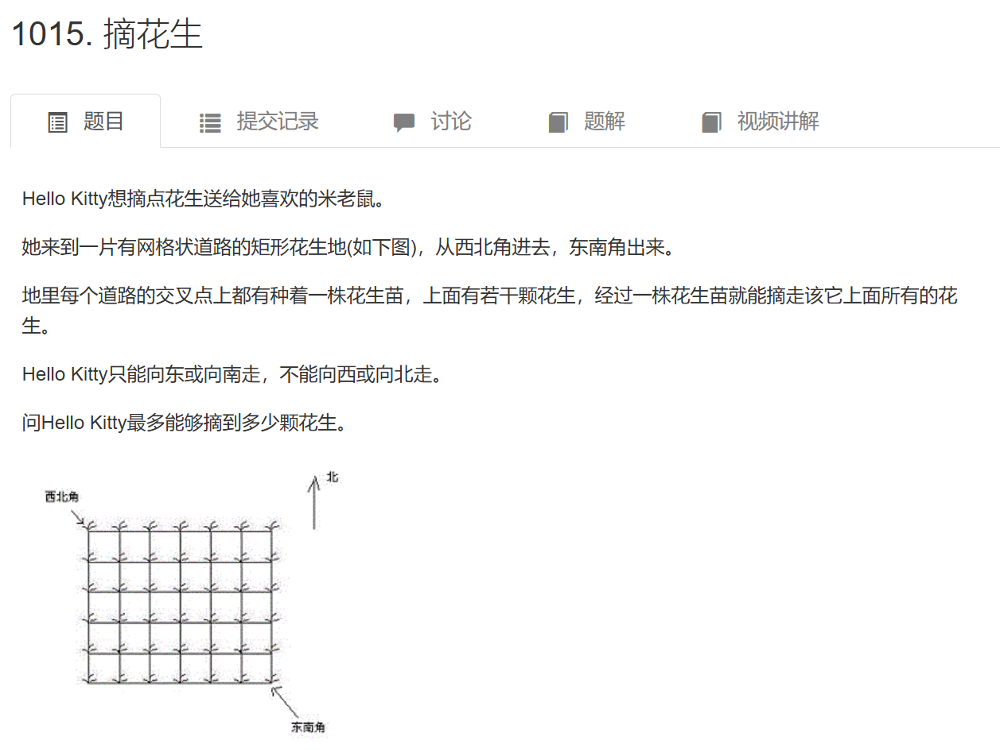
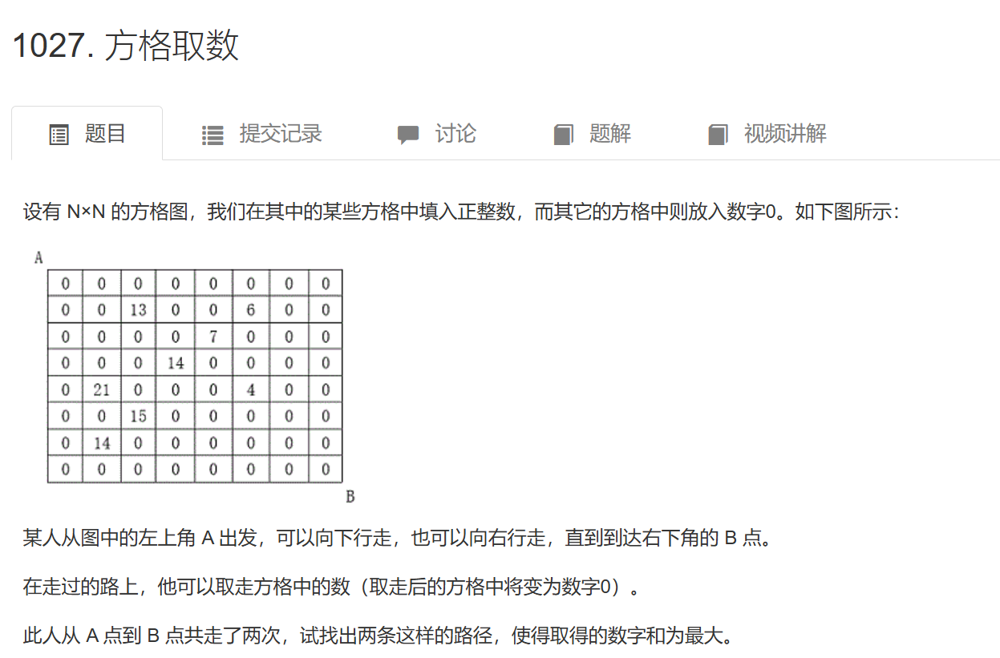
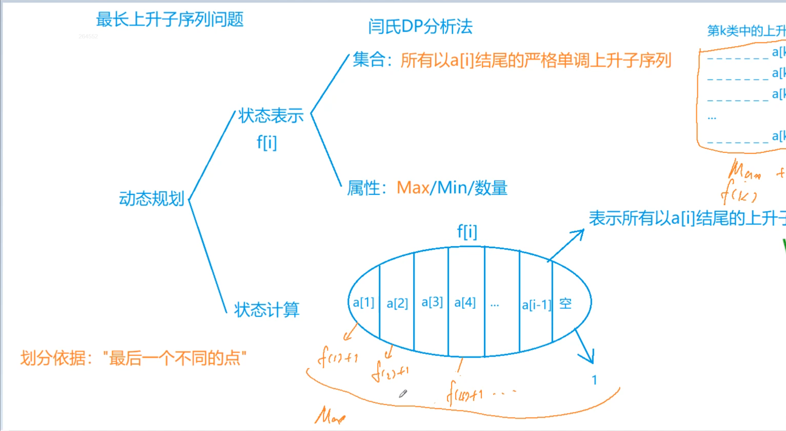
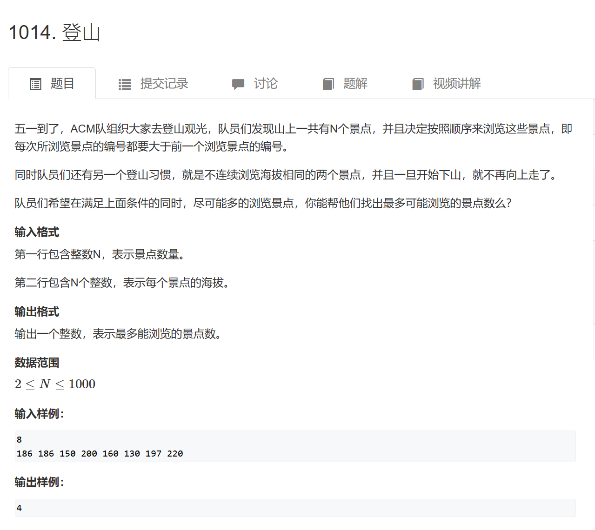
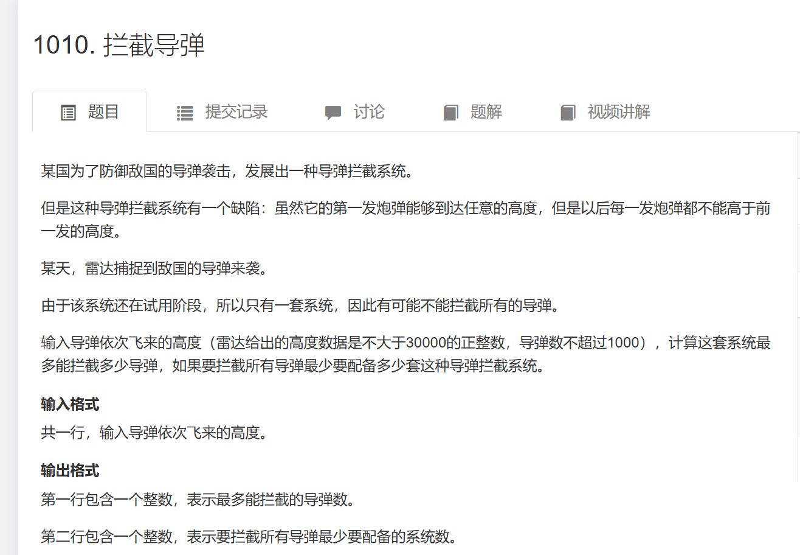
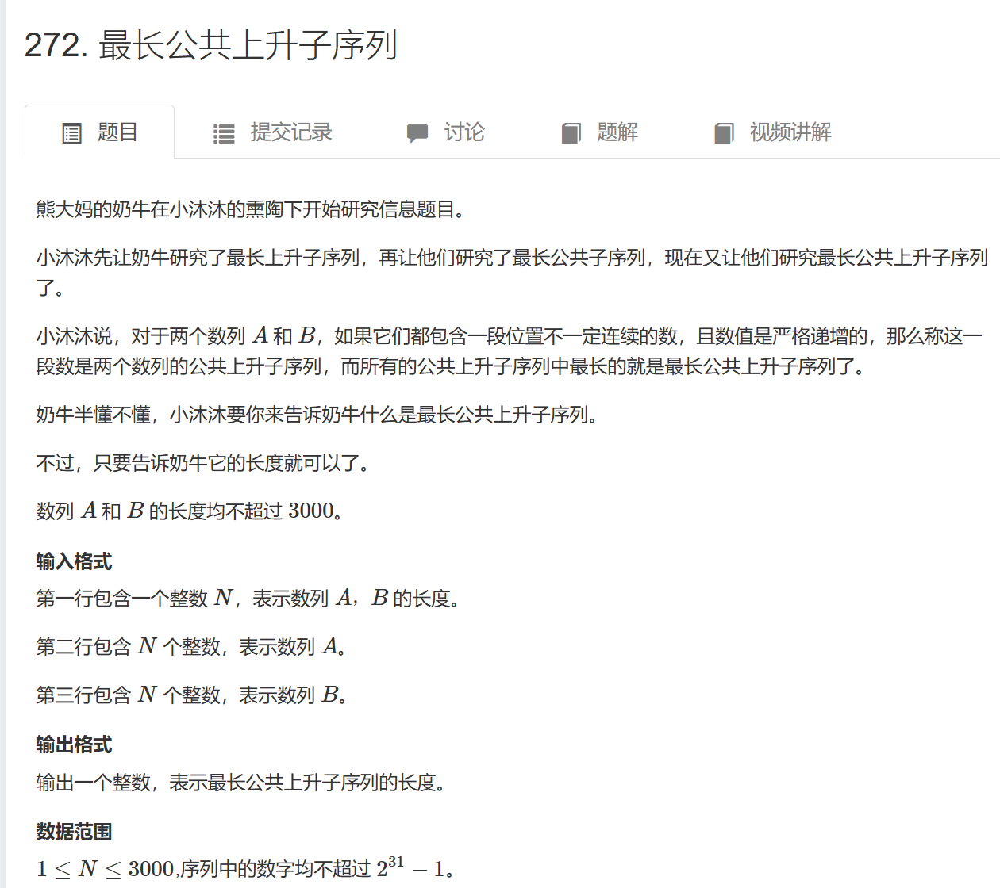
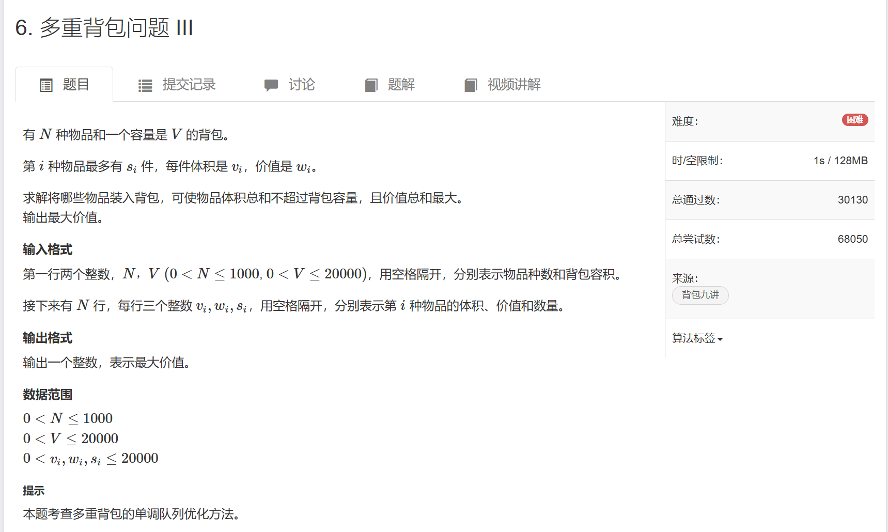
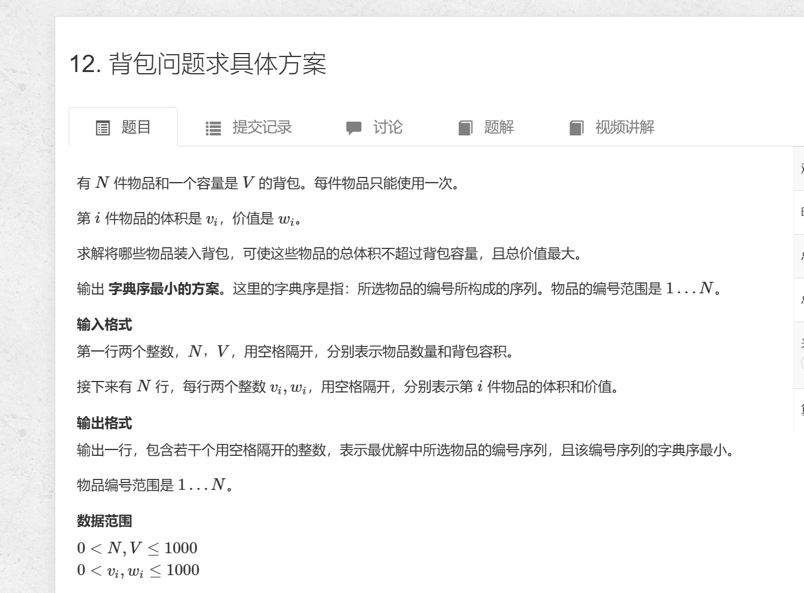
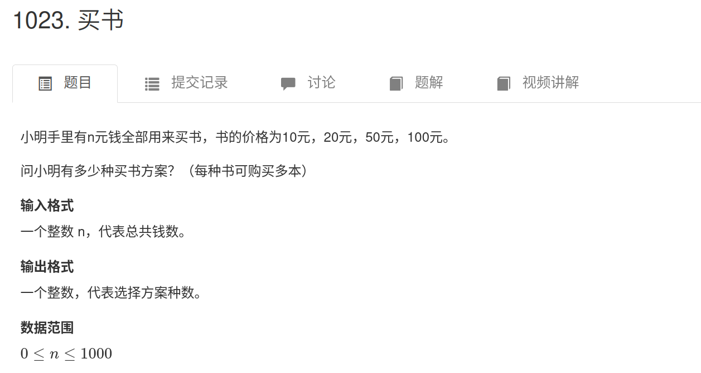
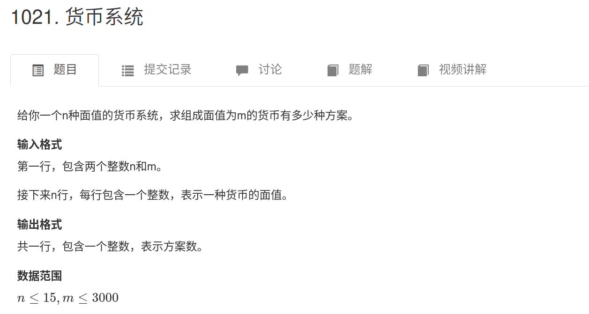

动态规划
- 状态表示(思考维度 如二维f[i][j])
- 集合：f[i][j] 表示哪些情况
- 属性：f[i][j] 表示集合里的 MAX/MIN/数量
- 状态计算
- 划分集合(不重不漏)
- 状态转移方程

dp
二维数字三角形模型

Pr1
1 |
|

Pr2
1 |
|
最长上升子序列模型

Model1
1 |
|

Pr3
1 |
|

Pr4
1 |
|

Pr5
1 |
|

Pr6
1 |
|
背包
多重背包 + 单调队列 + 一维数组

MultiBag
1 |
|

ConcreteSelection
1 |
|

GroupBag
1 |
|
完全背包

BuyBook
1 |
|
- 一维优化版本:
1 |
|

CurrencySystem
1 |
|
- 一维优化：
1
2
3
4
5
6
7
8
9
10
11
12
13
14
15
16
17
18
19
20
21
22
23
24
25
26
27
28
29
using namespace std;
const int N = 16;
const int M = 3010;
int a[N];
int n, m;
long long dp[M]; // 前 i 种货币 组成价值恰好为 m 的选法.
int main(){
cin >> n >> m;
for (int i = 1; i <= n; i++ ) cin >> a[i];
dp[0] = 1;
for (int i = 1; i <= n; i++) {
for (int j = m; j >= 0; j--) {
// dp[i][j] = dp[i - 1][j];
// 注意这里循环从 k = 1 开始，因为未更新时 dp[j] 等价于前面的 dp[i - 1][j]
for (int k = 1; k * a[i] <= j; k++) {
dp[j] += dp[j - k * a[i]];
}
}
}
cout << dp[m] << endl;
}